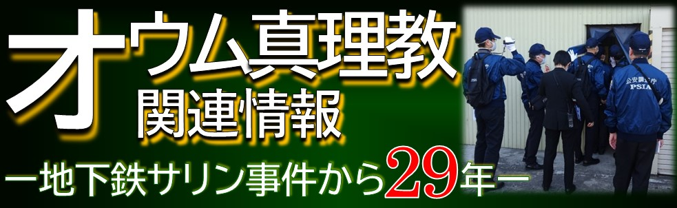
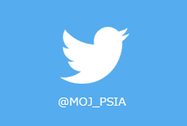

このページではJavaScriptを使用しています。
ナビゲーションをスキップし本文へ移動します。
公安調査庁
中
大
ふるや れい
あむろ とおる
バーボン
私の恋人はこの国です。
喫茶店の店員でも探偵でもヤクザでもありません

令和6年8月2日
立入検査の実施結果について
令和6年8月1日
任期付職員（育児休業代替職員）の募集について
令和6年7月30日
「経済安全保障関連動向」ページを更新しました（2024年6月分）。
令和6年7月25日
【公安調査庁本庁】人事院主催【文理対象】1Day職場訪問・仕事体験に参加します！
令和6年7月23日
立入検査の実施結果について
令和6年7月22日
「Aleph（アレフ）」を対象とする再発防止処分の請求について（令和6年7月22日請求）
令和6年7月21日
公安調査庁開庁72周年
令和6年7月16日
公安調査官体験ツアーの開催のお知らせ
令和6年7月16日
「世界のテロ等発生状況」を更新しました。
令和6年7月9日
最近の内外情勢（2024年6月）を更新しました。
令和6年6月28日
【公安調査庁本庁】人事院主催【理系学生限定】夏の1Day職場訪問・仕事体験に参加します！
令和6年6月28日
中途採用比率の公表について
令和6年6月25日
立入検査の実施結果について
令和6年6月21日
立入検査の実施結果について
令和6年6月21日
東京農工大学主催「公認サークル・リーダーズ講習会」で公安調査庁が講演をしました！
令和6年6月14日
立入検査の実施結果について
令和6年6月13日
令和6年度一般職（大卒程度）採用情報を更新しました。
令和6年6月11日
立入検査の実施結果について
令和6年6月5日
【中国公安調査局】個別業務説明会の開催期間延長について
令和6年6月4日
【関東公安調査局】2024年度官庁合同業務説明会（関東甲信越地区）
令和6年5月31日
立入検査の実施結果について
令和6年5月31日
令和６年度選考採用（障害者選考）の実施について
令和6年5月24日
立入検査の実施結果について
令和6年5月21日
立入検査の実施結果について
令和6年5月20日
【東北公安調査局】国家公務員一般職（大卒程度）試験受験予定者向け業務説明会のお知らせ（６月）
令和6年5月20日
任期付職員（育児休業代替職員）の募集について（北海道公安調査局）
令和6年5月20日
任期付職員（育児休業代替職員）の募集について（公安調査庁）

情報提供窓口
申請・相談等
公益通報に関する受付及び相談
特定秘密に関する通報窓口
ご意見・ご感想など
情報公開・個人情報保護
職員による障害を理由とする差別に関する相談窓口
公安調査庁職員以外の方に対するセクシュアル・ハラスメント相談窓口設置
公安調査庁職員の贈与等報告書の閲覧申請
業者の方へ
ホームページメンテナンスのお知らせ